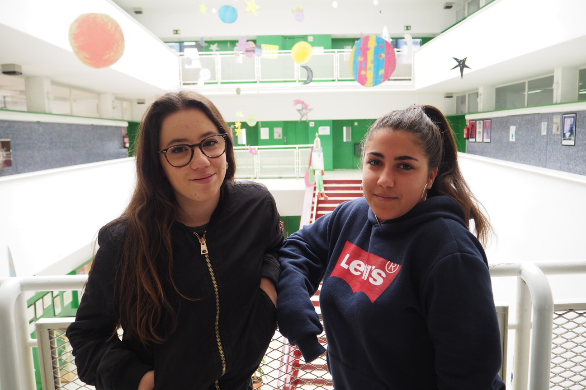

Proyecto Migracions'19
Barres i ones
Proyecto Migracions'19
Barres i ones
Biografia
Entrevista
Plato
Receta
Alumnos

Entrevista realizada por: Claudia y Bárbara
"Somos 2 alumnas de 3r ESO del INS Barres i Ones, hemos participado en un proyecto sobre las Migraciones conjuntamente con el MHIC. Hemos hecho entrevistas, hemos aprendido a editar vídeos y a realizar infografias. Hemos aprendido recetas de cocina de diferentes culturas y los motivos por los cuales hay personas que deciden emigrar."